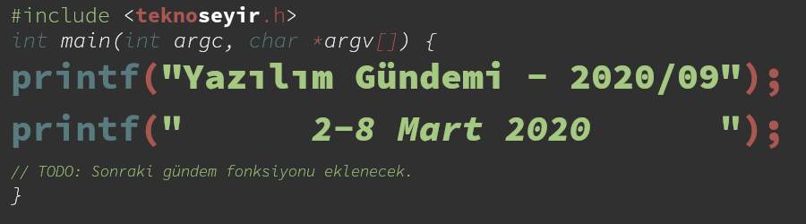

Yazılım Gündemi - 2020/09
2-8 Mart 2020
İçindekiler

< Önceki Gündem | 2-8 Mart 2020 | Sonraki Gündem >
1 Korona virüs yazılım şirketlerini uzaktan çalışmaya zorluyor
Uzun bir zamandır tüm dünyanın gündemi, gün geçtikçe daha da fazla ülkede görülmeye başlayan "Korona" virüsü. Elbette teknoloji ve dolayısıyla yazılım sektörü de bu gündemden payını aldı. Amerika Birleşik Devletlerinde de vaka sayılarının artmasıyla birlikte Microsoft, Facebook, Twitter ve Google gibi büyük firmalar çalışanlarına "ofise gelmeyin uzaktan çalışabilirsiniz" demeye başladı. Aynı zamanda sektörümüzle ilgili konferansların da çoğu ya iptal edildi ya da çok ileri bir tarihe ertelendi.
Her ne kadar kötü bir olay nedeniyle de olsa firmaların artık uzaktan çalışmaya sıcak bakması bence iyi bir gelişme. Ülkemizde pek fazla yaygın olmasa da dünyada pek çok şirket uzaktan çalışma imkanını sunuyor zaten ama bu olaylarla birlikte sayıları geçici olarak artsa bile faydasını gören şirketlerin uzun dönem için de uzaktan çalışma imkanlarını değerlendireceklerini düşünüyorum. Sadece şirket ve çalışanlar için değil, şehir için de faydaları söz konusu olabilir. Nitekim Amazon ve Microsoft, Seattle'daki ofisleri kapatmalarından dolayı Seattle şehrinin trafiğinde gözle görülür azalmalar olmuş. Aynı şekilde konferans ve etkinliklerin de uzaktan yapılacak olması, şirketlere ve organizasyonlara farklı bakış açıları kazandıracaktır.
2 Apple, App Store uygulama değerlendirme rehberini güncelledi
DeveloperTech sitesinin bu hafta yayınlandığı habere göre Apple, kendi uygulama mağazası olan App Store'a uygulama gönderirken dikkat edilmesi gerekenleri anlattığı dokümanı güncelledi.
Bu güncelleme ile birlikte artık geliştiriciler, bildirimleri kullanarak kullanıcılara reklam içerikli mesajlar gönderebilecekler. Elbette geliştiricilerin öncelikle bunun için kullanıcıdan izin almaları ve kullanıcıya bu özelliği kapatma imkanının sunulması da gerekiyor.
Bir diğer önemli değişiklik ise üçüncü parti uygulamalar ve kullanıcı girişi işlemlerini etkiliyor. Eğer uygulamanızda "Google ile giriş yap", "Facebook ile giriş yap" gibi özellikleri sunuyorsanız, artık onların yanına bir tane daha eklemeniz gerekiyor: "Apple ile giriş yap". Bu özelliği Apple geçtiğimiz aylardaki bir etkinliğinde duyurmuştu ve gizlilik odaklı bir giriş sistemi olduğunu söylemişti. Elbette bazı uygulamalar için ayrıcalık tanınmış durumda. Uygulamanız bu listedeki maddeler ile uyumluysa, bu özelliği eklemek zorunda değilsiniz:
- Eğer uygulamanız sadece kendi şirketinizin kullanıcı girişi sistemini kullanıyorsa,
- Eğer uygulamanız kullanıcıların var olan eğitim ya da kurumsal hesaplarıyla giriş yapabileceği eğitim için geliştirilmiş ya da kurumsal bir uygulama ise,
- Eğer uygulamanız bir devletin vatandaş tanımlama sistemlerini (e-devlet gibi) kullanıyorsa,
- Eğer uygulamanız sadece ilgili servisi kullanmaya yarayan bir istemci ise,
"Apple ile giriş yap" butonu eklemenize gerek yok. Bazı maddeleri iyi çevirememiş olabilirim, bu nedenle en iyisi bir yanlış anlaşılmaya mahal vermemek adına dokümanın ilgili kısmına bir göz atın :).
3 Laravel 7 sürümü yayınlandı
PHP ile web uygulamaları geliştirmeye yarayan popüler framework sistemlerinden olan Laravel'in bu hafta içerisinde 7 numaralı yeni büyük güncellemesi yayınlandı. 3 Mart günü duyurulan bu sürüm, 3 Eylül 2020'ye kadar hata giderme güncellemesi, 3 Mart 2021'e kadar ise güvenlik güncelleştirmeleri almaya devam edecek. Bu sürümle birlikte gelen bazı özellikler ise şu şekilde:
3.1 Laravel Airlock
Laravel'in içerisinde birçok konuda geliştiriciye kolaylıklar sağlayan alt kütüphaneler mevcut. Artık bunlara bir yenisi daha ekleniyor: Laravel Airlock. Kullanıcı girişi ve yetkilendirilmesi işlerini kolaylaştırıyor. Elbette bu versiyondan önce de Laravel bu konuda kolaylıkları olan bir framework idi fakat artık bu sistemin kendi bir adı var ve bazı ek özellikler de gelmiş. Örneğin artık bir kullanıcıya birden çok erişim anahtarı (TOKEN) tanımlayabilir ve bu erişim anahtarlarının kapsamını ve yapabileceklerini sınırlayabiliyoruz.
3.2 HTTP istemcisi
Laravel, bu sürümle birlikte popüler PHP HTTP istemcilerinden biri olan Guzzle kütüphanesinin bazı parçalarını kendi içerisine ekledi. Artık web uygulamamız içerisinden başka uygulamalar ya da siteler ile etkileşime girerken daha zengin bir API'ye sahibiz. Örneğin bu şekilde bir POST isteği yapıp, cevabını da kolayla kullanıcıya gösterebiliriz.
use Illuminate\Support\Facades\Http; $response = Http::withHeaders([ 'X-First' => 'bir', 'X-Second' => 'iki' ])->post('http://test.com/users', [ 'name' => 'Eren', ]); return $response['id'];
Bu sürümle birlikte gelen tüm özellik ve değişiklikler için bu sayfayı ziyaret edebilirsiniz. Ayrıca Laravel 6'dan Laravel 7'ye geçmek için de bu güncelleme rehberinden faydalanabilirsiniz.
4 PowerShell 7.0 sürümü yayınlandı
Microsoft'un geçtiğimiz senelerde platformlar-arası (cross-platform) çalışabilir hale getirdiği PowerShell, bu hafta içerisinde yeni sürümü yayınladı.
Bu sürüm ile birlikte diğer shell'lerde olan bazı yeni operatörler
PowerShell'e de geldi. Örneğin artık pipeline operatörleri ile uygulamaları
ardı arına çalıştırabilir (&&) ya da birinin çıktısını diğerine
yönlendirebilirsiniz (||). Ben GNU/Linux dağıtımı kullandığım için bash
üzerinden bir örnek vereceğim ama uygulamaların windows karşılıklarıyla
aynısını PowerShell 7 üzerinde siz de çalıştabilirsiniz.
wget http://ftp.linux.org.tr/linuxmint/iso/stable/19.3/linuxmint-19.3-cinnamon-64bit.iso && shutdown -h now
Yukarıdeki gibi bir komutu çalıştırarak önce ilgili dosyayı indirebilir, ardından ise sisteminizi kapatabilirsiniz.
Yeni sürümle ilgili detaylı bilgiler ve güncelleme rehberi için konu başlığına eklediğim bağlantıya tıklayabilirsiniz.
5 Yaklaşan Etkinlikler
6 Diğer Haberler
- Yazılımcılar için sosyal medya özelliği olan Dev.to, 8 Mart Dünya Emekçi Kadınlar günü için kadınların programlamaya başlama hikayelerini anlatabileceği özel bir sayfa hazırladı.
- Google, Korona virüsü nedeniyle iptal edilen organizasyonların ve okulların kullanabilmesi için Hangout Meet hizmetine sınırlı süre için ücretsiz paket ekledi.
- Korona virüsü nedeniyle iptal edilen organizasyonlar:
- Google I/O konferası online olarak düzenlenecek.
- Atlassian Summit 2020 etkinliği iptal edildi.
- KubeCon etkinliği 17 - 20 Kasım 2020 tarihine ertelendi.
- NodeJS v13.10.0 sürümü yayınlandı.
- VueJS kütüphanesinin v3.0.0-alpha sürümü yayınlandı.
- Angular Framework 9.0.5 sürümü yayınlandı.
- Kotlin programlama dilinin 1.3.70 sürümü yayınlandı.
- Rollup bundler aracının 2.0.0 sürümü yayınlandı.
- HTTP istek ve cevaplarını OpenAPI standartlarına göre denetleyen openapi-cop aracının ilk stabil versiyonu 1.0.0 yayınlandı.
7 Lisans

Yazılım Gündemi - 2020/09 yazısı Eren Hatırnaz tarafından Creative Commons Atıf-GayriTicari-AynıLisanslaPaylaş 4.0 Uluslararası Lisansı (CC BY-NC-SA 4.0) ile lisanslanmıştır.